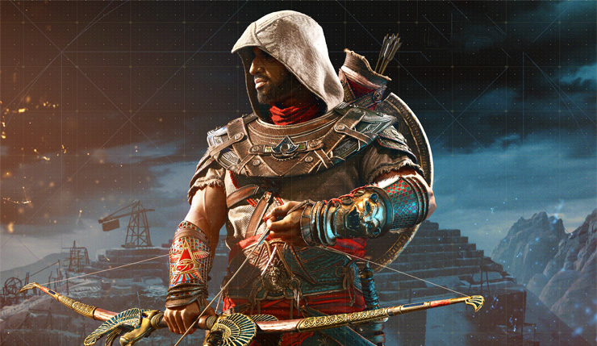
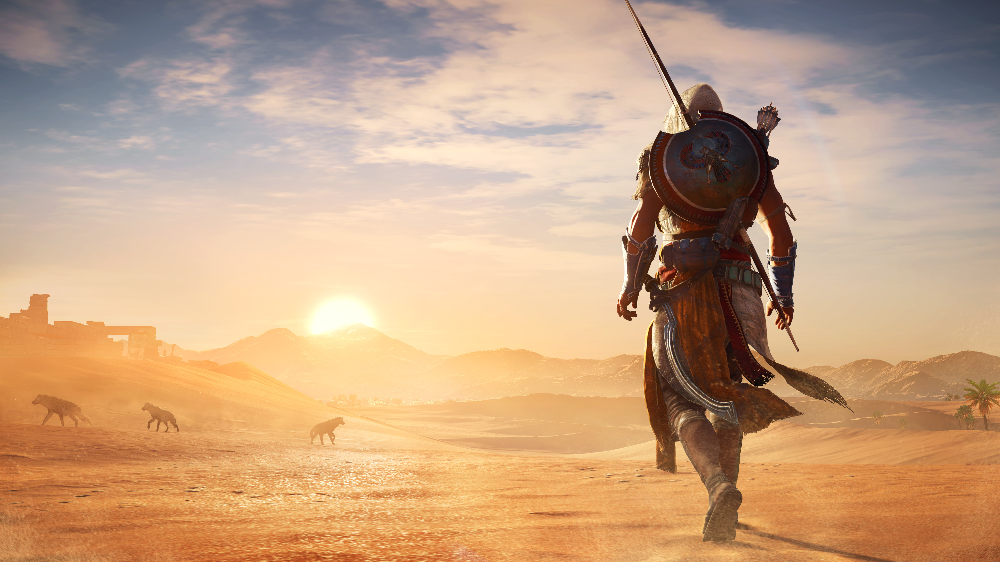

Assassin's Creed (Morilčeva vera v dobesednem prevodu) je tretjeosebna akcijska videoigra, ki jo je razvil Ubisoft Montreal, izdal pa Ubisoft. Izšla je 15. novembra 2007 za igralni konzoli PlayStation 3 ter Xbox 360, 10. aprila 2008 pa še različica za operacijski sistem MS Windows. Igro je razvijala več kot 300 članka ekipa pod vodstvom odgovorne producentke Jade Raymond. Priča smo trenju med dvama stranema, med Vitezi templarji in med asasini, ki se bojujejo za artefakte »Koščke Edna« (Pieces of Eden). Starodavni artefakti omogočajo nadzor nad mislimi. Igro je kritična javnost ocenila pozitivno. Prejela je nekaj nagrad na sejmu E3 leta 2006. Leto 2009 je prineslo nadaljevanje igre, Assassin's Creed II. Zaradi uspeha prvega kot drugega dela je igra vsako leto deležna novega nadaljevanja
Kot je poročal The New York Times, je bila to najbolj pričakovana igra leta 2007. Njeno zgodbo je navdihnil roman Alamut slovenskega pisatelja Vladimirja Bartola.

Osrednja fabula igre se odvija na ozemlju svete dežele v času tretje križarske vojne, tj. leta 1191. V središču zgodbe je skrivnostni red asasinov (Secret Order of Assassins), osnovan na sekti hasasinov. Asasini so podveja sekte šiitov. Okvirna zgodba pa se odvija v sodobnem času, kjer igralec prevzame vlogo Desmonda Milesa, ki ima z uporabo naprave »Animus« prevzame oblast nad protagonistom osrednje zgodbe, tj. Altaïrja Ibn-La'Ahada, člana asasinov, ter ima tako tudi vpogled v njegova doživetja oz. spomine.
Priča smo trenju med dvama stranema, med Vitezi templarji in med asasini, ki se bojujejo za artefakt »Košček Edna« (Piece of Eden). Starodavni artefakti omogočajo nadzor nad mislimi. Igro je kritična javnost ocenila pozitivno. Prejela je nekaj nagrad na sejmu E3 leta 2006. Leto 2009 je prineslo nadaljevanje igre, Assassin's Creed II. Zaradi uspeha prvega kot drugega dela je igra vsako leto deležna novega nadaljevanja.